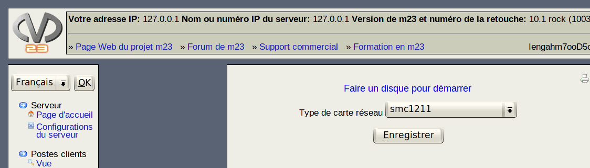

Vous pouvez construire un disque pour démarrer des postes client m23. Ce disque est nécessaire pour l'initialisation d'un nouveau poste client; vous n'en aurez plus besoin en fonctionnement normal. À la place du disque de démarrage, vous pouvez aussi utiliser l'amorçage 'bootrom' de votre carte réseau.

Sous-sections
root
2013-08-18